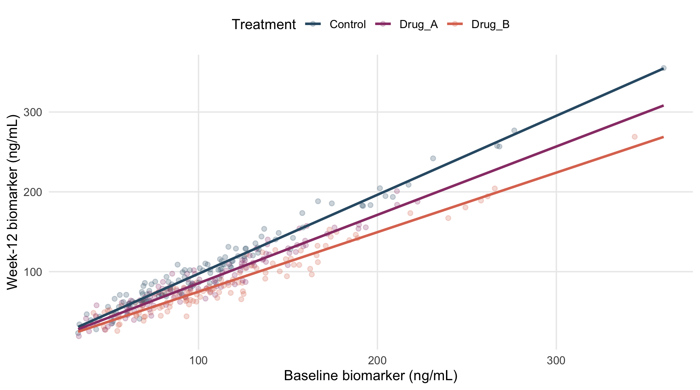

The biomarker provides an example where one treatment effect is not appropriate for all baseline values.
bio_dat <- dat |>
dplyr::select(treatment_arm,biomarker_baseline_ng_mL,biomarker_week12_ng_mL) |>
drop_na()
bio_center <- median(bio_dat$biomarker_baseline_ng_mL)
bio_dat <- bio_dat |> mutate(base_c=biomarker_baseline_ng_mL-bio_center)Because regression coefficients are interpreted when the other predictors equal zero, a raw baseline value of zero may give an unrealistic treatment comparison. Therefore, baseline is centered at its median, so that a centered value of zero corresponds to the median baseline biomarker value and the treatment coefficients represent group differences at that typical baseline level.
bio_common <- lm(biomarker_week12_ng_mL~base_c+treatment_arm,data=bio_dat)
bio_int <- lm(biomarker_week12_ng_mL~base_c*treatment_arm,data=bio_dat)
hc3_interaction_test(bio_int)
#>
#> Linear hypothesis test:
#> base_c:treatment_armDrug_A = 0
#> base_c:treatment_armDrug_B = 0
#>
#> Model 1: restricted model
#> Model 2: biomarker_week12_ng_mL ~ base_c * treatment_arm
#>
#> Note: Coefficient covariance matrix supplied.
#>
#> Res.Df Df F Pr(>F)
#> 1 345
#> 2 343 2 54.4 <0.0000000000000002 ***
#> ---
#> Signif. codes: 0 '***' 0.001 '**' 0.01 '*' 0.05 '.' 0.1 ' ' 1The interaction tests whether the treatment effect changes with baseline biomarker. Here, the interaction is important, so the interaction model is retained.
Because the treatment effect changes with baseline biomarker, one overall treatment effect would be misleading. Instead, treatment groups are compared at representative baseline values: the 25th, 50th, and 75th percentiles.
bio_q <- quantile(bio_dat$biomarker_baseline_ng_mL,c(.25,.50,.75))
bio_at <- as.numeric(bio_q-bio_center)
bio_levels <- tibble(base_c=bio_at,quantile=c("25th percentile","50th percentile","75th percentile"))
bio_emm <- emmeans::emmeans(
bio_int,~treatment_arm|base_c,
at=list(base_c=bio_at),
vcov.=sandwich::vcovHC(bio_int,type="HC3")
)
summary(pairs(bio_emm,adjust="tukey"),infer=c(TRUE,TRUE)) |>
left_join(bio_levels,by="base_c") |>
mutate(baseline_biomarker=base_c+bio_center) |>
dplyr::select(quantile,baseline_biomarker,contrast,estimate,lower.CL,upper.CL,p.value) |>
kbl(digits=3,caption="Treatment effects at the 25th, 50th, and 75th percentiles of baseline biomarker")| quantile | baseline_biomarker | contrast | estimate | lower.CL | upper.CL | p.value |
|---|---|---|---|---|---|---|
| 25th percentile | 71.2 | Control - Drug_A | 8.071 | 4.463 | 11.68 | 0 |
| 25th percentile | 71.2 | Control - Drug_B | 15.467 | 11.647 | 19.29 | 0 |
| 25th percentile | 71.2 | Drug_A - Drug_B | 7.395 | 3.378 | 11.41 | 0 |
| 50th percentile | 97.6 | Control - Drug_A | 11.576 | 8.460 | 14.69 | 0 |
| 50th percentile | 97.6 | Control - Drug_B | 21.895 | 18.622 | 25.17 | 0 |
| 50th percentile | 97.6 | Drug_A - Drug_B | 10.320 | 6.952 | 13.69 | 0 |
| 75th percentile | 129.7 | Control - Drug_A | 15.836 | 12.211 | 19.46 | 0 |
| 75th percentile | 129.7 | Control - Drug_B | 29.712 | 26.269 | 33.16 | 0 |
| 75th percentile | 129.7 | Drug_A - Drug_B | 13.875 | 10.038 | 17.71 | 0 |
A negative active-treatment versus Control difference means a lower adjusted week-12 biomarker at that baseline value.
bio_grid <- expand_grid(
base_c=seq(min(bio_dat$base_c),max(bio_dat$base_c),length.out=150),
treatment_arm=levels(bio_dat$treatment_arm)
)
bio_grid$predicted <- predict(bio_int,newdata=bio_grid)
bio_grid$baseline_biomarker <- bio_grid$base_c+bio_center
ggplot(bio_dat,aes(biomarker_baseline_ng_mL,biomarker_week12_ng_mL,colour=treatment_arm)) +
geom_point(alpha=.24) +
geom_line(data=bio_grid,aes(baseline_biomarker,predicted,colour=treatment_arm),linewidth=1.05) +
scale_colour_manual(values=pal) +
labs(x="Baseline biomarker (ng/mL)",
y="Week-12 biomarker (ng/mL)",
colour="Treatment")
Figure 18.1: Observed biomarker values and fitted treatment-specific relationships.
Different slopes show why the treatment effect must be interpreted at specific baseline biomarker values, rather than as one overall mean difference. :contentReferenceoaicite:4
The analysis is based on a linear regression model fitted with lm() that includes a baseline-by-treatment interaction. The interaction is tested with hc3_interaction_test(), and treatment effects at selected baseline values are estimated using emmeans() and pairs(). HC3 robust standard errors, calculated with sandwich::vcovHC(..., type="HC3"), are used for both tests and treatment comparisons.